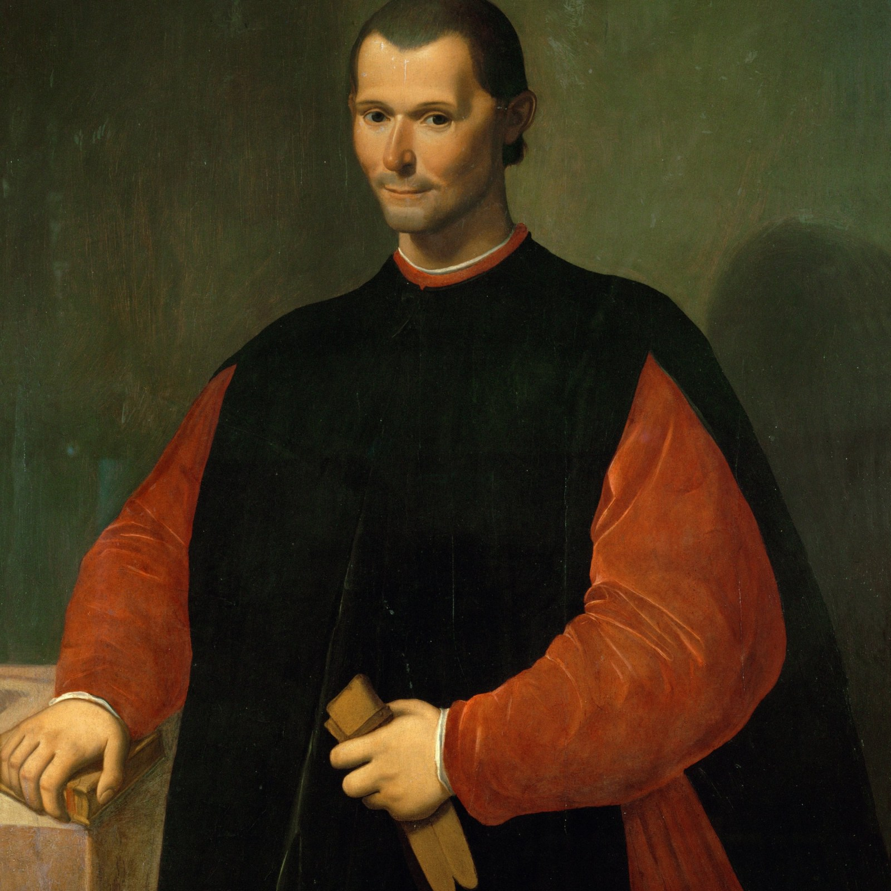

20 Lessons from Niccolò Machiavelli's "The Prince"
Genre: Political Science
Advice from the book banned by the church for 200 years. While the advice doesnt apply to most of us, it is good to know.
- Wicked tend to win because they do whatever it is needed to win even if it is wrong.
- Do not trust third parites( auxiliaries or mercenaries), create your own troops from your own state.
- Every good person should learn from the wicked so they can see the effort the wicked are willing to achieve the same end as you.
- It is far better to be feared than loved but avoid hatred at all cost from your troops.
- Most of the time, being effective and nice ruler is not possible.
- It is better to inspire terror than peace but careful you do not misuse or get addicted to it.
- Evaluate your inner circle, fill them with their desires for they will have to be the most loyal and relentless to fulfill your tasks.
- A good ruler should have following virtues: wisdom, strategy, strength, bravery and when necessary ruthless.
- The only sound, sure and enduring methods of any defences are those based on your own actions and skills.
- Get people to favour you, not your occupation/title.
- Do not fall for cheap dopamine like flattery which clouds your judgement.
- Always make firm decisions because standing in conflict as a leader will be held in low esteem by others.
- Value opinions from those who act towards your goal and if someone holds backs the truth, be ready to show your wrath.
- Never to join aggressive alliance with someone powerful than you unless absolutely necessary.
- Be in a constant state of good endevaours so people in your team do not have time to quietly plot against you.
- Be cunning like Emperor Severus who did what he had to do to gain power but when in power inspire to be peaceful with good morals like Marcus Aurelius even if you are not for the public.
- Do not act like a lion all the time as lions can be trapped.
- When occupying foreign land, always inspire smooth transition of power by destorying the main power, placing a partisian leader, settling there yourself,letting them keep their own laws and culture and being ruthless to rebels.
- Men must either be pampered or crushed for they will always look to serve their ends in this little life.
- Never be put in power by upper classes for you will not be able to rule yourself and will be doing favours in your dominion.
 The big man himself.
Machiavelli addresses our dark human nature to achieve ends. We shouldn't blame those who are in power, be it politican or CEO to be cruel rather learn from them and do better.
I personally see these lessons as something to use when necessary to stop a bigger problem from happening. The reason I don't try to implement in everyday life or problems is because it is immoral and being immoral hurts you psychologically at the end but it is good to know when these deceitful tricks are used against you.Words learnt:
1)Expedient: means of achieving the end even in immoral way.
2)Animosity: strong hate.
3)Razed: destroyed.
4)Partisan: stronger support, more than loyal.
5)Dominion: rulling or controlling power.
6)Strife: bitter conflict.
7)Dissension: disagreement.
8)Prudence: ability to self discipline.